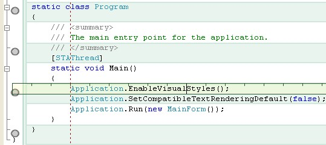
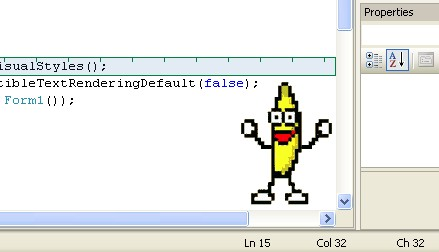
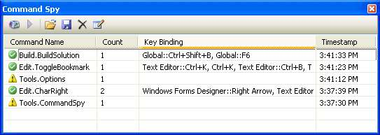
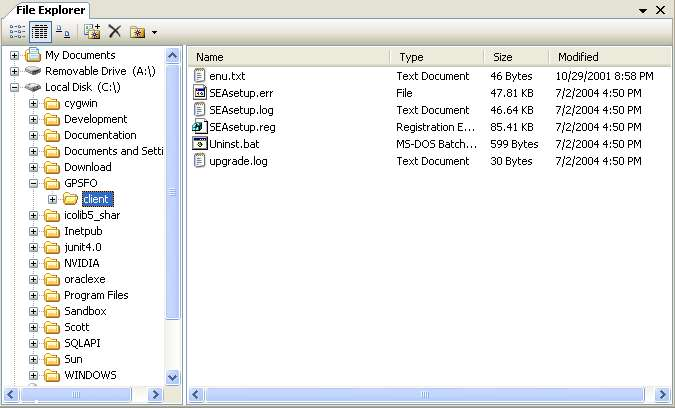
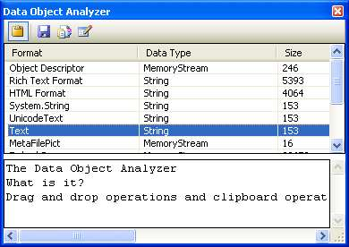
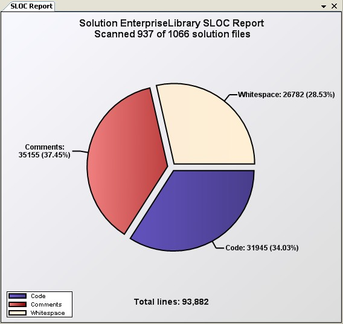

INTRODUCTION
The XXX YYY Code Project article submission template (HTML version)
Using this template will help us post your article sooner. To use, just
follow the 3 easy steps below:
1. Fill in the article description details
2. Add links to your images and downloads
3. Include the main article text
That's all there is to it! All formatting will be done by our submission
scripts and style sheets.
-->
Free SlickEdit® Gadgets
Title: Free SlickEdit® Gadgets
Description: Introducing a free set of tools designed to speed up development and add some fun to Visual Studio® 2005.
Author: SlickEdit Inc.
Email: info@slickedit.com
Technologies:Visual Studio 2005
Keywords: Visual Studio, SlickEdit, Plug-In, Add-In, Tools, Productivity, Navigation
Languages: All .Net languages and unmanaged C++
Target Audience: Developers
Include Dis ussion: Yes
Free SlickEdit® Gadgets
As a programmer, one of the best feelings in the world is writing something that makes you want to call your programming
buddies over and say, "This is cool! Check this out." Sometimes it happens while developing a prototype or proof of concept.
Sometimes it's just a crazy idea you decided to experiment with.
We have these moments at SlickEdit too, and decided to gather some of them up and
put them out there for others to use for free. We call these SlickEdit® Gadgets. Some of the gadgets provide useful utilities and some
of them are just for fun. We hope that as you go through these, at least one of them will make you want to call your office
mates over to check it out. Feel free to share these with as many people as you like, and be sure to stop by the
SlickEdit Tools forum, to discuss the gadgets, and find out new and interesting
ways to use them. These plugins are for Visual Studio® 2005 only.
Editor Gadgets is a collection of four small utilities to add spice to your Visual Studio editor. Each one may be
enabled or disabled individually. These gadgets include:
Line ruler - Places a "ruler" highlight across your current line (where the cursor is) and has tick marks to indicate the editor's indentation levels.
Indentation guide - Draws a vertical bar in the editor indicating the indentation level of the current line.
Auto-copy selection - Automatically copies text to the clipboard when selected with the mouse. Paste may be done by simply clicking in the editor with the middle mouse button (the scroll wheel on most mice). These behaviors are similar to XMouse.
Editor Graphic - Allows you to place a graphic inside your editor, either as a single image or as a tiled background.

Green bar tiled background with the line ruler and indentation guide

Dancing banana and the line ruler
The Command Spy
Whenever you click on a menu item or toolbar button in Visual Studio, you are executing what is known as a "command".
Unfortunately, it's almost impossible to tell what command is linked to which menu items or toolbar buttons. The Command Spy
monitors command execution and allows you to see exactly what commands you've run, how many times you've run them and what key
bindings are used to invoke those commands. The main purpose of this tool is to allow you to learn what commands are bound to
which keystrokes, so that you can work faster within the IDE.

File Explorer
Using Visual Studio's Open File dialog to open files in Visual Studio can be very tedious, especially when you have
to open files from several different directories. The File Explorer provides an easy way to open solutions, projects,
or single files in Visual Studio. It also makes it easy to drag-and-drop files into an open Visual Studio project.

The Data Object Analyzer
Drag-and-drop operations and clipboard operations both work with "data objects". Data objects contain [1...n] data items,
which may be of any type, and are stored with an associated string-based key. There are some standards about what key/data
pairs are used in clipboard or drag-and-drop operations, but for the most part, applications add whatever data they want.
If you're writing an application that requires clipboard or drag-and-drop integration, it is important to understand
what data is expected from other applications.
The Data Object Analyzer solves this problem by inspecting the contents of any clipboard operation, or drag-and-drop operation,
from any other application. The Data Object Analyzer can then be used to automatically generate functions to handle any clipboard
or drag-and-drop data.

The SLOC Report
The SLOC Report provides an easy way to count the lines of code. The line count is divided into three categories;
code, comments, and whitespace. Once the lines of code have been counted, the results are drawn as a pie graph. SLOC reports
may be generated for solutions, projects or individual files.

Take it For a Spin
At SlickEdit, we are confident that you will be as excited as we are about SlickEdit®
Gadgets. Download it for free and try it out for yourself.